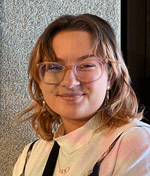

Alivia Halza's Portfolio for AENG 110 Class |
||
| Home Print Project Photo Project Sketching Project |
 Student at Millersville University | Hello! My name is Alivia Halza and I am a new transfer to Millersville University as of this Spring 2025. While I haven't officially joined any clubs, I love attending University Board events like Bingo, and various club meetings like the Forging and Blacksmith Club. My favorite spot on campus is the Conestoga River Trail, which is fairly close to campus and I get to take my cat on walks with me! I am technically a junior in the BA Art program interested in pursuing art therapy after my time here. This website is a project for my Applied Engineering Class, Communication and Information Systems. I know what you're thinking--why would an art student be taking an engineering class? My hope was to learn about the different ways my artwork could be communicated, through mediums like Lithography and Photo Editing. For this assignment, not only am I learning how to code a webpage, but this also gives me the opportunity to showcase the different projects I've worked on throughout this semester. Please take your time browsing through each project, and consider taking this course as well! |
|
© 2025 Alivia Halza |